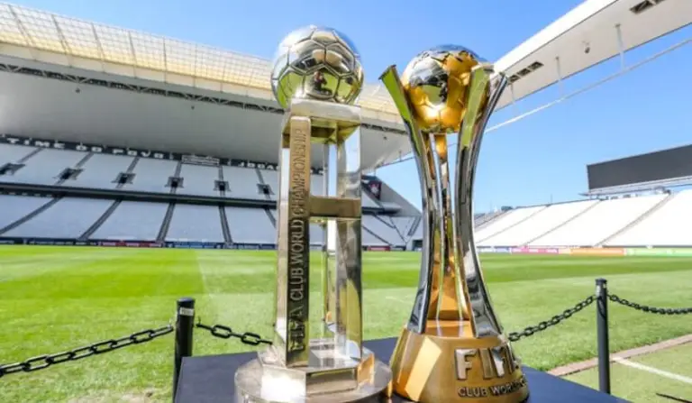

Títulos
Títulos internacionais
Mundial de Clubes (2000 e 2012)
Copa Libertadores (2012)
Recopa Sul-Americana (2013)
Títulos nacionais e interestaduais
Campeonato Brasileiro Série A (1990, 1998, 1999, 2005, 2011, 2015 e 2017)
Campeonato Brasileiro Série B (2008)
Copa do Brasil (1995, 2002, 2009 e 2025)
Supercopa do Brasil (1991 e 2026)
Torneio Rio-São Paulo (1950, 1953, 1954, 1966 e 2002)
Títulos estaduais
Campeonato Paulista (1914, 1916, 1922, 1923, 1924, 1928, 1929, 1930, 1937, 1938, 1939, 1941, 1951, 1952, 1954,
1977, 1979, 1982, 1983, 1988, 1995, 1997, 1999, 2001, 2003, 2009, 2013, 2017, 2018, 2019 e 2025)
Torneio Início do Campeonato Paulista (1919, 1920, 1921, 1929, 1936, 1938, 1941, 1944 e 1955)
Torneios e taças internacionais secundárias
Copa Presidente Marcos Pérez Gimenez/Pequena Taça do Mundo (Venezuela, 1953)
Torneio Internacional Charles Miller (Brasil, 1955)
Copa do Atlântico (1956)
Copa Cidade de Turim (Itália, 1966)
Torneio Costa do Sol (Espanha, 1969)
Troféu Apolo V (Estados Unidos, 1969)
Copa São Paulo (Brasil, 1975)
Torneio Feira de Hidalgo (México, 1981)
Copa das Nações (Estados Unidos, 1985)
I Torneio Internacional de Verão Cidade de Santos (Brasil, 1986)
II Torneio Internacional de Verão Cidade de Santos (Brasil, 1987)
XLII Troféu Ramón de Carranza (Espanha, 1996)
Taças Cittá de Firenze, Ao Empório Toscano, Sudan Ovais e Professor Caputto (1929)
Copa dos Campeões Nacionais (1986)
Taça Mais Querido do Brasil (1955)
Troféu Osmar Santos (2005)
Torneios e taças interestaduais secundárias
Taça Supremacia/Torneio Quinela de Ouro (1942)
Torneio de Brasília (1958)
Pentagonal do Recife (1965)
Triangular de Goiânia (1967)
Torneio do Povo (1971)
Taça Cidade de Porto Alegre (1983)
Char de la Victoire e Taça Vada (1928)
Taça Apea (1930) Taça Aliança da Bahia (1936)
Taça Prefeitura de Salvador (1936)
Taça Linha Circular (1938)
Taça de Campeões Rio-São Paulo (1941)
Torneios e taças estaduais secundárias
Taça Cidade de São Paulo (1922)
Taça Cidade de São Paulo (1942/43, 1947/48, 1952 e 1978)
Taça Competência (1922/23/24)
Taça Ballor (1923/24 e 1928)
Troféu Fasanello (1938)
Taça Henrique Mundel/Festival do São Paulo Futebol Clube (1938)
Taça Prefeitura Municipal de São Paulo (1953)
Torneio das Missões/Taça Tibiriçá (1953)
Taça Charles Miller (1954 e 1958)
Taça dos Invictos (1956, 1957 e 1990)
Torneio de Classificação do Campeonato Paulista (1957)
Taça São Paulo (1962)
Taça Piratininga (1968)
Torneio Laudo Natel (1973)
Taça Governador do Estado (1977)
Copa Bandeirantes (1994)
Taça Beneficência Espanhola (1915, 1916)
Taça Cronistas Esportivos (1916)
Taça oferecida pelo doutor Alcântara Machado (1916)
Taça oferecida pelo senhor Celinho Ambrósio (1917)
Taça Amílcar Barbuy (1919)
Taça União Brasil (1919)
Taça 47 (1919)
Taça Neco (1920)
Taça Doutor Arnaldo Vieira de Carvalho (1920)
Taça Prefeitura Municipal de Guaratinguetá (1920)
Taça Ida (1921)
Taça Antarctica (1921)
Taça ao Preço Fixo (1921)
Taça Sacadura Cabral e Gago Coutinho (1922)
Taça Cântara Portugália (1922)
Taça Joalheria Castro (1925)
Taça Guido Giacominelli (1925)
Taça Agência Ford (1925)
Taça Studebaker (1925)
Taça Lacta (1926)
Taça Centenário do Uruguai (1926)
Taça Guanará Espumante (1926)
Taça Francisco Rei (1926)
Taça Apea (1926)
Taça De Callis (1926)
Taça Elixir de Cabo Verde Composto (1926)
Taça Adamastor (1926)
Taça Fábrica de Gelo Vila Mathias (1927)
Taça Sarmento Beires (1927)
Taça Ribeiro de Barros (1927)
Taça Tipografia Carvalho (1927)
Taça O Comerciário (1927)
Taça Almirante Sousa e Silva (1929)
Troféu Washington Luís (1930)
Taça Ministro do Chile (1928, 1931)
Troféu Liga Paulista (1939)
Taça Duque de Caxias (1941)
Taça Manoel Domingos Corrêa (1942)
Troféu Bandeirante (1954)
Troféu Lourenço Fló Júnior (1962)
